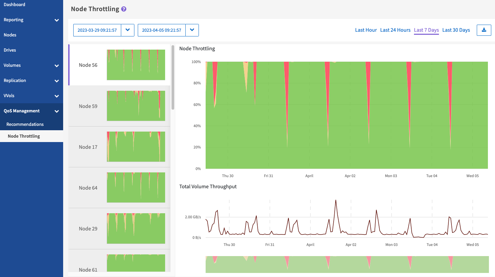

Commencez avec SolidFire Active IQ
Commencez avec SolidFire Active IQ
Accélération des nœuds
 Suggérer des modifications
Suggérer des modifications
À partir de la page QoS Management > Node restriction, disponible dans le panneau latéral d'un cluster sélectionné, vous pouvez afficher le pourcentage d'accélération des nœuds du cluster. Les nœuds sont répertoriés sous forme de vignettes sur le côté gauche de l'écran et sont classés selon le degré d'étranglement d'une plage de temps sélectionnée.
Pour en savoir plus sur l'affichage des informations d'accélération des nœuds :
Affichez les graphiques et sélectionnez les plages de dates
Les graphiques et plages de dates dans SolidFire Active IQ sont intégrés de manière transparente. Lors de la sélection d'une plage de dates, les graphiques Node restriction et Total Volume Throughput de cette page s'ajustent à la plage sélectionnée. La plage de dates par défaut affichée pour chaque graphique est de sept jours. Lorsque vous sélectionnez un nœud dans les onglets de sélection de graphique, ces graphiques passent au nœud nouvellement sélectionné.
Vous pouvez sélectionner une plage de dates dans la liste déroulante du calendrier ou à partir d'un ensemble de plages prédéfinies. Les plages de dates sont calculées à l'aide de l'heure actuelle du navigateur (au moment de la sélection) et de la durée configurée. Vous pouvez également sélectionner l'intervalle souhaité en vous brossant directement sur le graphique à barres en bas de l'écran. Pour passer d'un graphique à l'autre, sélectionnez les présentations miniatures sur la gauche.
Le graphique Node restriction affiche la limitation du nœud sur la période sélectionnée en fonction des paramètres d'IOPS minimum et maximum pour les volumes hébergés sur le nœud sélectionné. La couleur représente le degré de restriction :
-
Vert : le nœud n'est pas ralenti. Les volumes sont autorisés à exécuter des opérations d'E/S par seconde maximales configurées.
-
Jaune : l'accélération du nœud est limitée. Les volumes sont limités par le paramètre d'IOPS maximal, mais les performances restent constantes au niveau du paramètre d'IOPS minimal, voire au-delà.
-
Rouge : le nœud est fortement étrangleur. Lorsque les volumes sont restreints, les performances peuvent tomber en dessous du paramètre d'IOPS minimal.
Le graphique débit de volume total affiche la somme du débit des volumes principaux pour un nœud sélectionné. Le graphique présente la somme du débit de lecture et d'écriture du volume. Il n'inclut pas le trafic des métadonnées ou d'autres nœuds. Elle prend également en compte la présence de volumes sur un nœud, ce qui entraîne une baisse du débit lors du transfert des volumes hors d'un nœud.
Développez l'exemple de graphique

Positionnez le pointeur de la souris à n'importe quel point du graphique pour afficher les détails de point dans le temps.

|
Dans la page accélération des nœuds, vous pouvez déterminer s'il existe une poussée QoS dans un cluster de stockage, reportez-vous à cette section "Article de la base de connaissances" pour plus d'informations. |
Exporter les données d'accélération de nœud
Vous pouvez exporter les données graphiques au format CSV (valeurs séparées par des virgules). Seules les informations affichées dans le graphique sont exportées.
-
Dans une liste ou un graphique, sélectionnez le
 icône.
icône.